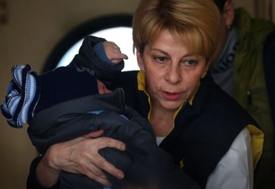
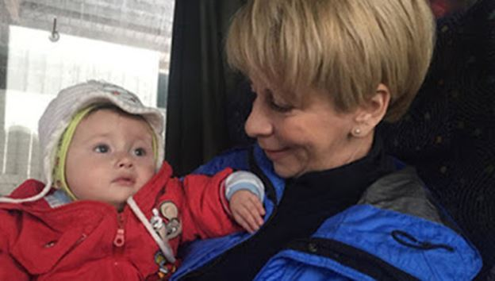
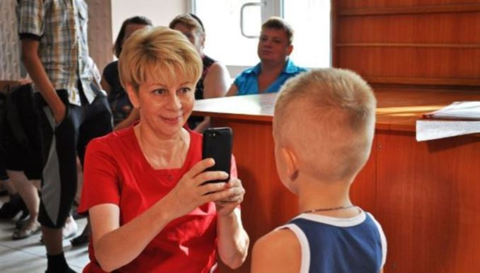
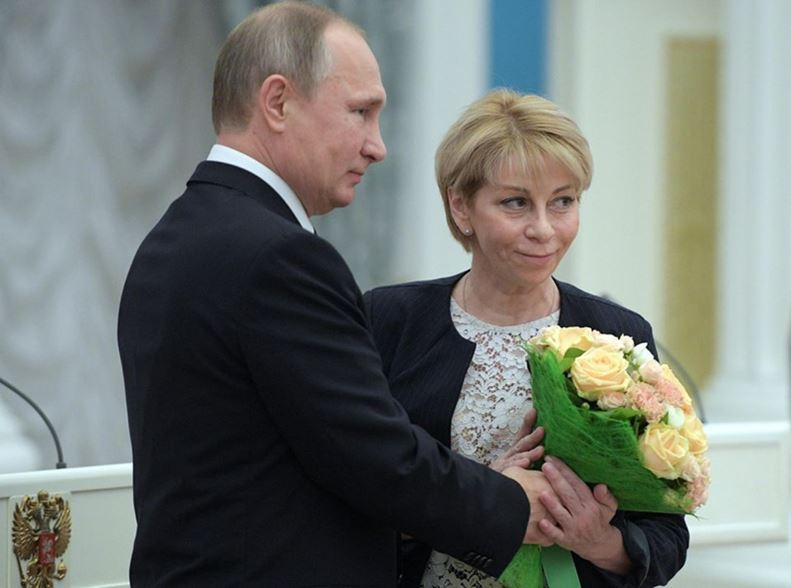

Menue et forte, voix rauque et regard doux, celle que certains comparent à la Mère Teresa a trouvé une sépulture à sa taille : la mer Noire. Elle était au nombre des 97 passagers du Tupolev Tu-204 qui s’est écrasé, pour des raisons qui restent obscures, à l’aube du 25 décembre. Difficile de décrire en quelques mots ce que fut le parcours professionnel de docteur Liza après son retour en Russie, vers 2006, et un peu plus tôt, en 1999, lorsqu’elle avait quitté les USA pour venir s’installer à Kiev et y fonder un hospice pour les cancéreux en phase terminale. Depuis, elle formule un credo auquel elle restera fidèle jusqu’au dernier souffle : aider les misérables, les démunis, les rejetés.
En 2007, elle fonde une organisation caritative, L’aide juste, qui regroupe actuellement sept bénévoles. On la voit panser les plaies suppurantes des SDF, humecter les lèvres gercées des mourants, administrer des soins palliatifs aux vieillards qui se savent condamnés et dont beaucoup souffrent d’être seuls au soir de leur vie.
Mais c’est au début de la guerre ukraino-otanienne que docteur Liza se fait particulièrement remarquer. Membre du Conseil russe des droits de l’homme, elle organise l’évacuation systématique des enfants du Donbass malades et/ou blessés de guerre. Dans un contexte de blocus humanitaire sévère mais surtout de blocus administratif – les FAU étaient plus d’une fois hostiles au passage des convois humanitaires vers la Russie – la tâche était aussi périlleuse que de longue haleine. Liza n’a jamais baissé les bras. Bien au contraire.
A force de ténacité et de combat avec l’engrenage bureaucratique, des centaines d’enfants donbassiens ont pu suivre un traitement gratuit dans les meilleures cliniques de Moscou. Cette gratuité des soins est aussi le résultat de l’investissement personnel de Liza qui a su intercéder auprès des autorités. On connaît même des cas de transplantation rénale ou d’amputations complexes, des cas a priori désespérés qui auraient pu doubler le sinistre bilan infantile des pilonnages ukrainiens des Républiques du Donbass.
– Vous qui avez été plus d’une fois dans le Donbass, en gardez-vous des souvenirs troublants, voire choquants, lui demandait, il y a environ deux ans, un journaliste de Life News ?
– Oui, parmi tant d’autres, celui d’un petit garçon de deux ans. Il ne savait pas encore parler. Pourtant, quand on lui criait Gare aux obus, il tombait à plat ventre, se cachait les oreilles avec les mains, fermait les yeux, et tirait la langue pour équilibrer la tension. Il le faisait si bien, on aurait dit un petit soldat.
– Qu’est-ce qui vous a encore surpris?
– Que l’on puisse s’habituer à tout. Même à la guerre. Et que l’on s’y habitue à la vitesse grand v.
Il s’était trouvé des contempteurs de différents bords politiques pour lui reprocher son apolitisme. Comme par hasard, dans la plupart des cas, il s’agissait des fameux libéraux russes qui, de concert avec le Croix-Rouge, mettant eux-mêmes à nu la déliquescence de leur pensée, se refusaient à comprendre que l’on puisse venir en aide à des enfants appartenant « au camp opposé, au camp pro-Poutine ».
S’étonnerait-on alors de la réaction indignée de la clique « démocratique » lorsque Liza attesta ne pas avoir vu de contingents russes dans le Donbass ? C’est toujours en tant que médecin et philanthrope que Glinka a élargi son engagement à l’enfer syrien. Si elle a trouvé la mort avec les Chœurs de l’Armée rouge et les journalistes qui les accompagnaient pour couvrir les concerts de fin d’année, c’est bien qu’elle avait profité de l’occasion pour acheminer des médicaments vers Alep via Lattaquié. C’était loin d’être son premier déplacement en Syrie car pour elles, il n’y avait ni Russes, ni Ukrainiens, ni Syriens – rien que des êtres humains voués à la souffrance et dont elle retranscrivait les histoires dans son journal en ligne.
Celle d’un garçonnet de cinq ans, condamné, qui demandait au Père Noël un peu de silence à la place d’une tortue Ninja, celle d’un ancien détenu, voyou à peine repentant, les traits durs et le cœur tendre, qui avait demandé un chevreuil dans son lit d’hôpital parce qu’il lui rappelait son enfance campagnarde, celle d’une sans-abri qui pleurait encore son grand amour de jadis et donnait des leçons de philo dignes de Paris-X et des penseurs existentialistes. Il m’a fallu une nuit blanche pour égrener tous ces visages à multiples facettes que Liza, après de longues journées de dur labeur, a pris la peine d’immortaliser.
Pour les russophones, une réalisatrice de talent, Elena Pogrebizhskaya, avait tourné en 2009 un documentaire consacré au quotidien de docteur Liza. Son quotidien à elle et celui de ses protégés, tous de grands malades. Je me permets de traduire ici deux extraits d’entretien.
Elena P. : Je vois que la mort ne vous fait pas peur...
Docteur Liza. : Qu’est-ce qui vous le fait penser ?
Elena P. : Ah, parce que finalement elle vous fait peur ?
Docteur Liza. : Mais bien sûr ! Et même beaucoup ! Je ne sais pas comment je vais mourir. Peut-être que ma disparition sera instantanée, peut-être que je vais mettre du temps, souffrir... Je ne sais pas. Et c’est le fait de ne pas savoir qui fait peur. Mes sentiments religieux me laissent supposer qu’il y a quelque chose dans l’Après mais quoi au juste .. Il n’y a rien de pire que l’Inconnu (...)
Elena P. : C’est pas trop dur ?
Docteur Liza. : Quoi donc ?
Elena P. : Et bien de s’occuper des gens qui sont condamnés.
Docteur Liza. : Et c’est quoi la différence entre toi et ces gens-là ?
Elena P. : Et bien... Moi, je ne suis pas condamnée.
Docteur Liza. : Ah bon ? Non, tu n’es pas condamnée POUR L’INSTANT. Mais tu le seras, comme je le serai, un jour ou l’autre. Pourquoi me serait-il plus dur de leur parler à eux que de te parler à toi ?
Silence tombal. Elena est désarçonnée.

Elizaveta Glinka décorée au Kremlin pour son travail humanitaire. Photo Alexei Druzhinin. AFP
Le dix décembre, Elizaveta Glinka a été décorée au Kremlin pour son engagement humanitaire. Nous ne savons jamais si nous reviendrons vivants, parce que la guerre, c’est l’enfer sur terre, et je sais de quoi je parle, dit-elle lors de son discours officiel. Mais nous avons la ferme conviction que la bonté, la compassion, et la charité, ont toujours raison des armes.
Partager cette page